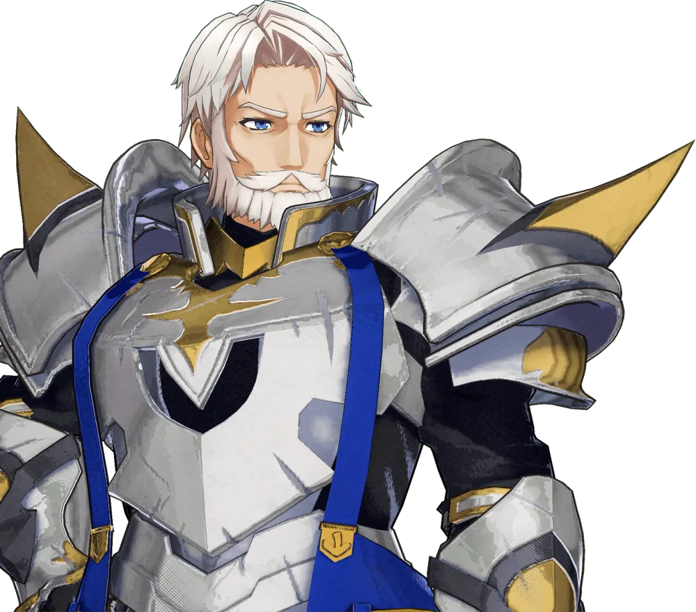
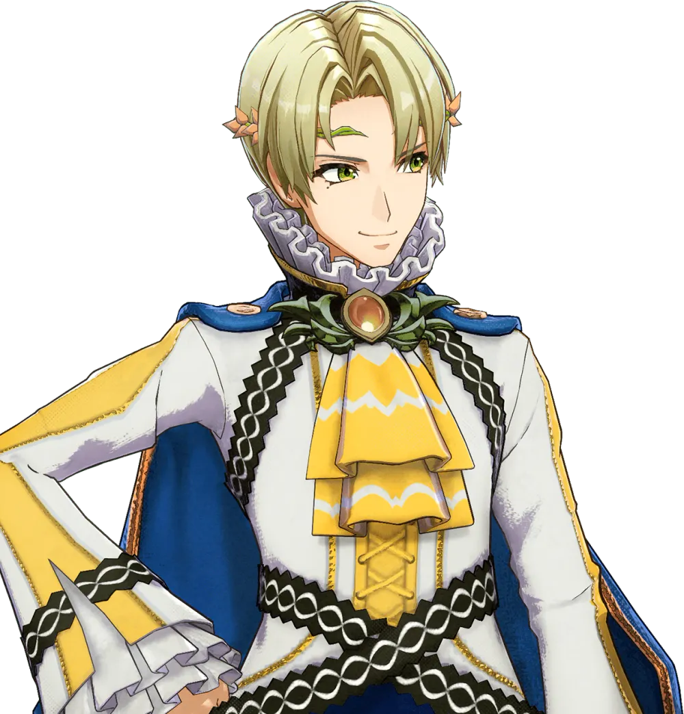
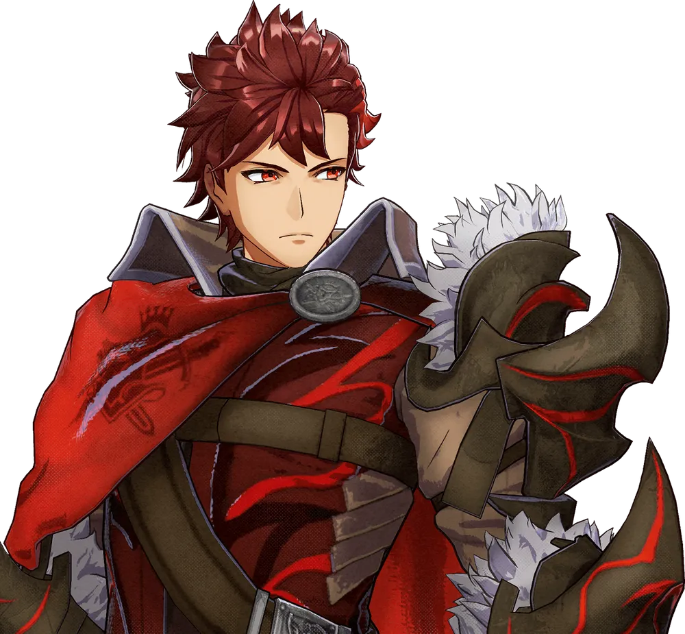
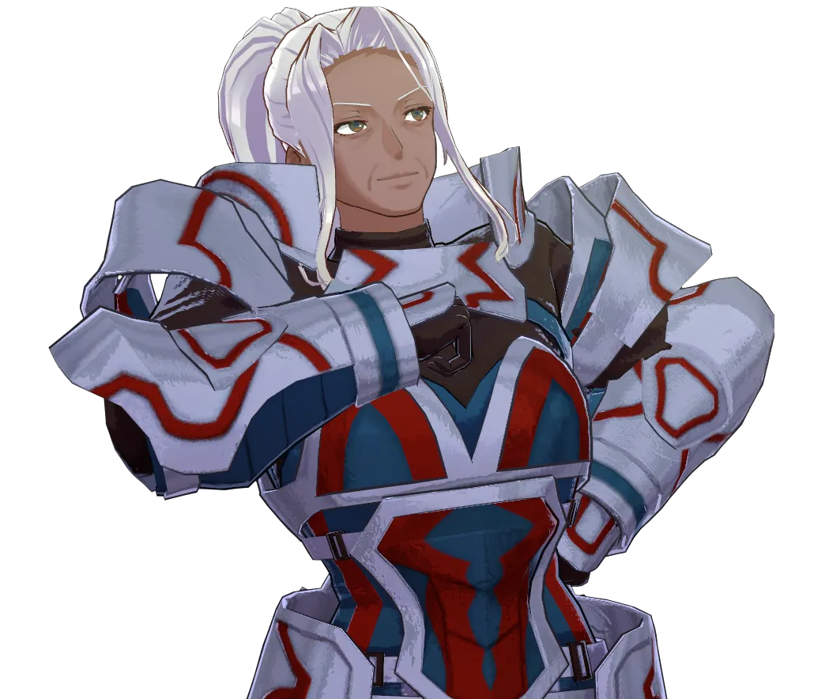
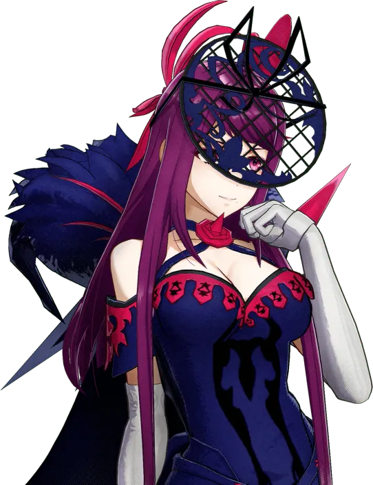
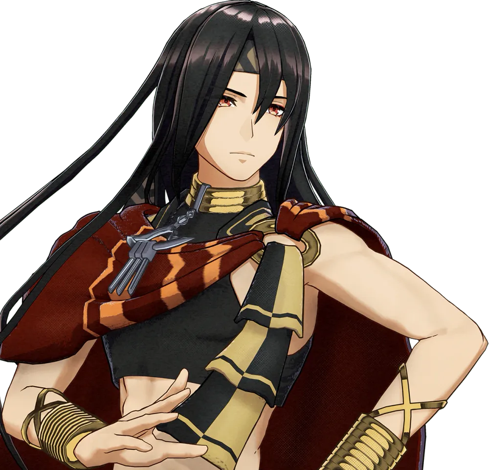
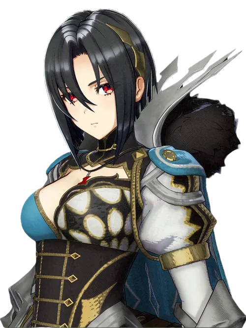
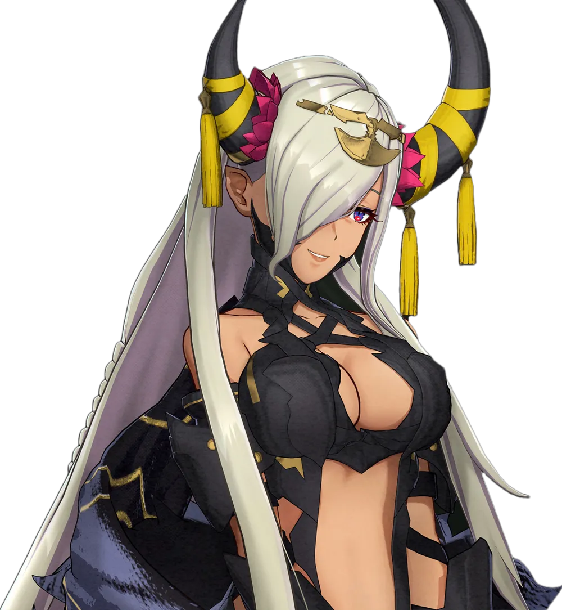
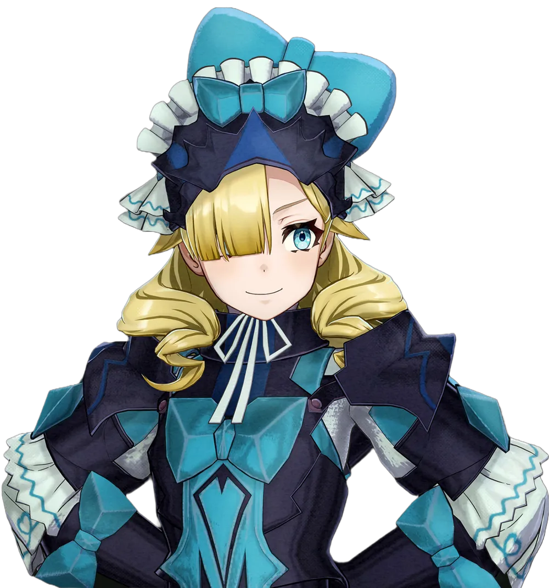

Elyos : 문장사 동조 및 스킬 상속 완벽 최적화 빌드
신룡을 호위하는 강력한 용의 수호자들
평화를 사랑하는 풍요로운 초원과 호수의 나라
무력과 광석으로 단련된 강인한 투쟁의 나라
지식과 마법을 숭배하는 눈보라와 종교의 나라
자유와 쾌락을 추구하는 메마른 사막의 나라
사룡 세력 출신 및 극후반 특수 영입 요원들
일그러진 평행세계의 사룡 남매와 사구 요원들
인게이지는 직업 스탯보다 어떤 문장사를 장착하느냐가 성능의 70%를 결정합니다. 린(속도), 아이크(탱킹), 루키나(인연방패) 등 캐릭터의 단점을 지우고 장점을 극대화하는 매칭이 최우선입니다.
초중반에는 SP(스킬 포인트)가 매우 부족합니다. 가장 범용성 높은 시구르드의 [재이동(1000SP)]이나 린의 [속도+3(500SP)]을 최우선으로 상속받아 초반 스노우볼을 굴리는 것이 국룰입니다.
이번 작에서는 무기 무게가 캐릭터의 '체격' 스탯보다 높으면 속도가 대폭 깎입니다. 리프의 [체격+] 스킬이나 문장 각인을 통해 무거운 무기의 페널티를 상쇄해야 추격(2연타)을 당하지 않습니다.
풍화설월과 달리 레벨업 시 스탯 성장이 고정된 것이 아니라 누적 레벨 개념이 적용됩니다. 하급직 LV 10이 되면 경험치 손실을 막기 위해 가차 없이 즉시 상급직(마스터 프루프)으로 전직하는 것이 효율적입니다.

기본 초상화
기본 초상화
기본 초상화
기본 초상화
기본 초상화
기본 초상화
기본 초상화
기본 초상화
기본 초상화